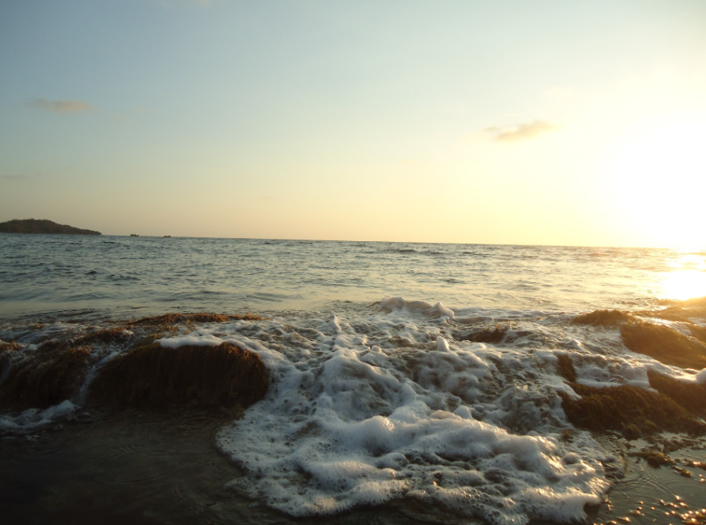

[11222022]
i miss you a little extra today.
grief can't be cured away—
it's something to live with everyday.
achievement are just clanging metals nowadays;
this journey feels bleak without you.
i never knew what i had until it was gone.
i mourn everything.
i could've been better.
i'll get by, but it won't be a beautiful life.
[unseen devotion]
i love you—
whether it's discernible or not.
when you don't feel it, i keep you in my prayers
i ask God to keep your edges safe.
i think of you most ardently.